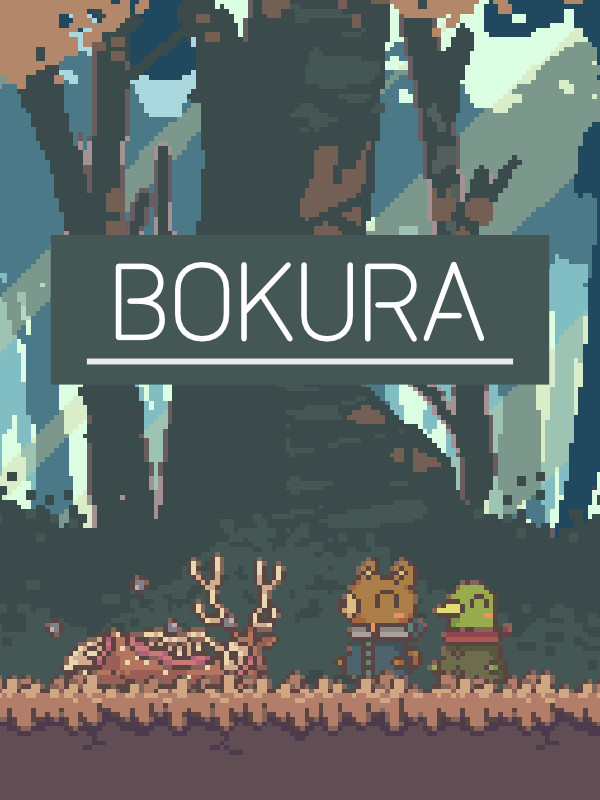

Bokura
Bokura
Details
|  | |
| Playtime | 7h 38m 0s |
| Last Activity | 2024-04-23 0:26:32 |
| Added | 2024-01-17 0:54:05 |
| Modified | 2025-10-02 10:31:41 |
| Completion Status | Completed |
| Library | Steam |
| Source | Steam |
| Platform | Macintosh PC (Windows) |
| Release Date | 2023-08-10 |
| Community Score | 80 |
| Critic Score | 90 |
| User Score | |
| Genre | Adventure Indie Platform Puzzle |
| Developer | tokoronyori |
| Publisher | KODANSHA |
| Feature | Co-Operative Multiplayer |
| Links | Steam Twitch Official Website App Store (iPhone) App Store (iPad) Nintendo |
| Tag | 2D Action Action-Adventure Adventure Atmospheric Casual Co-op Cute Drama Early Access Emotional Indie Local Co-Op Local Multiplayer Multiplayer Online Co-Op Pixel Graphics Psychological Horror Puzzle Platformer Story Rich |
Description
Are you and I really seeing the world the same way?
An exclusively two-player puzzle adventure game that makes you question your reality.
*Players must communicate with each other to play this game. If you are not playing in the same location, you will need another communication method, such as voice chat. Before buying the game, please keep in mind that the game itself does not provide a separate communication method.

BOKURA is a puzzle adventure game that can only be played with two players. To play the game, two people must play on two separate machines.
While you have to work together, what you see on your game screens is completely different.
Even though the same character should be displayed on both of your screens, to one of you, they might look like an animal out of a picture book, while to the other, they might look like a robot. (The objects you can interact with might move differently for each of you too!)
You will need to talk to each other to find out what you can and cannot see. Work together to solve the puzzles and continue your journey.
You can play online in different locations while talking to each other over a call.
 Player 1: A world of animals
Player 1: A world of animals
 Player 2: A world of machines
Player 2: A world of machines
Gameplay
The game is a side-scrolling co-op puzzle adventure. You will be faced with a number of critical choices throughout the story which will lead your journey in different directions.

You Can't Play Alone
A unique feature of this game is that you cannot play it alone. You cannot play it singleplayer or with a computer as player two. It can only be played with two people—no more, no less.
As such, the very first choice you make in this game takes place before you even start: Who should I play this game with?
The total gameplay time is around three to four hours. While you play, you and the other player will need to talk to each other to understand what is happening, solve problems, and make important decisions together.


Story
Two boys who run away from home encounter a dead deer. The sight of it causes them to faint, but when they wake up, the worlds they see are no longer the same.
One of them sees a world of animals, while the other sees a world of machines. Will the boys be able to find out what has happened to them and return to the world they used to be in?

Creator Profile
tokoronyori
An indie game dev with a distinctive style that fills his games with originality and mystery. He is known for his 2016 hit game Hitoribocchi Wakusei (Lonely Planet). He created the two-player puzzle adventure game BOKURA as a member of the first round of Kodansha's Game Creators' Lab. He specializes in making experiences only possible through games with his characteristic game mechanics.
Creator Comment
Have you ever wondered if the world you see is the same as the world everyone else sees?
BOKURA is a game about two boys whose worlds are no longer the same as everyone else's. When you play, you'll find that what you and the other player see are not the same either. I hope you'll overcome the differences in how you see the world and relive the friendship of your childhood through the story of these two boys.